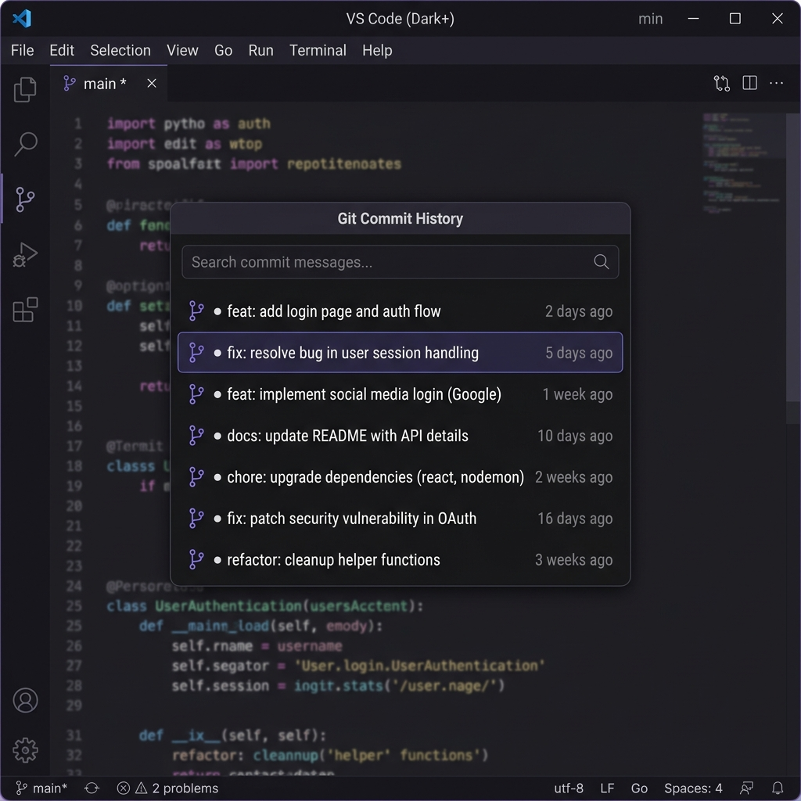

Browse every commit that touched a file, preview its contents at any point in time, and restore it with a single click — all without leaving VS Code.
Git Peel keeps it simple — no cluttered UI, no complex setup. Just fast, intuitive git history for any file you're working on.
Instantly browse all commits that affected the currently open file, displayed in a clean quick-pick interface.
Preview any file at any commit point without modifying your workspace. See exactly what changed, in context.
Found the version you need? Restore your file to any previous commit state with a single click and confirmation.
No repo-level noise. Git Peel shows only the commits relevant to the file you're actively editing.
Commit dates displayed as human-friendly relative times — "2 hours ago", "3 days ago" — for quick scanning.
Every restore requires explicit confirmation. Your current work is always one "undo" away from being back.
Get up and running in seconds — no configuration needed.
Open any file that's tracked in your git repository.
Open the command palette and search for "Git Peel" or "Show Git History".
Scroll through all commits that modified the file. Select one to preview its content.
Found what you need? Hit restore, confirm, and your file is reverted to that commit.
Git Peel uses VS Code's native quick-pick UI, so it feels right at home in your editor.

Install Git Peel and start exploring your file history in seconds. Free, open-source, and lightweight.
Lightweight. No dependencies.
Git Peel relies only on your local git installation — nothing else to configure or install.